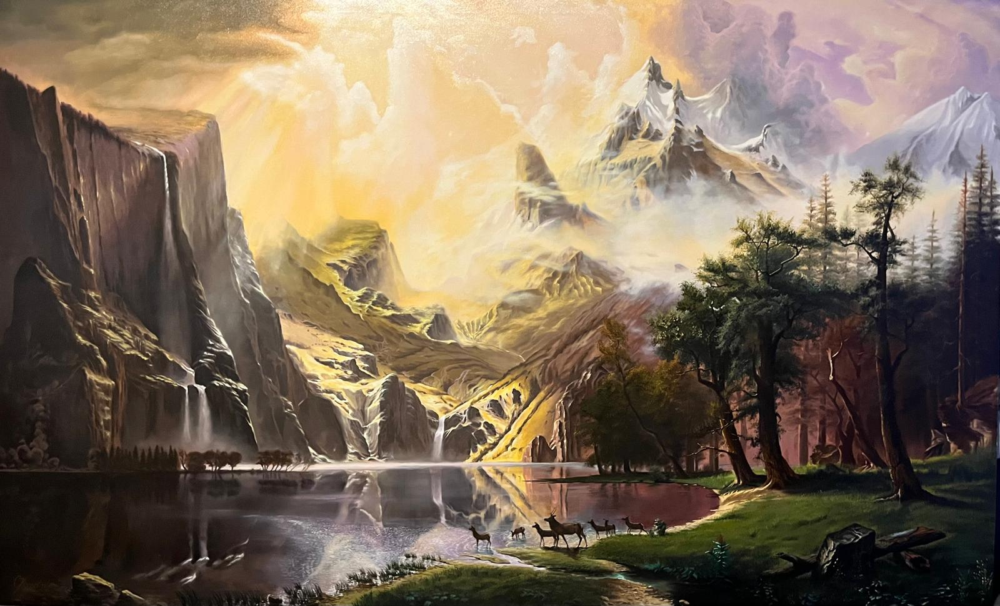
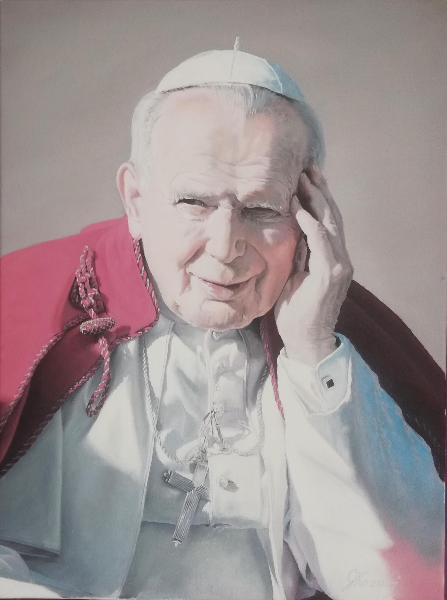
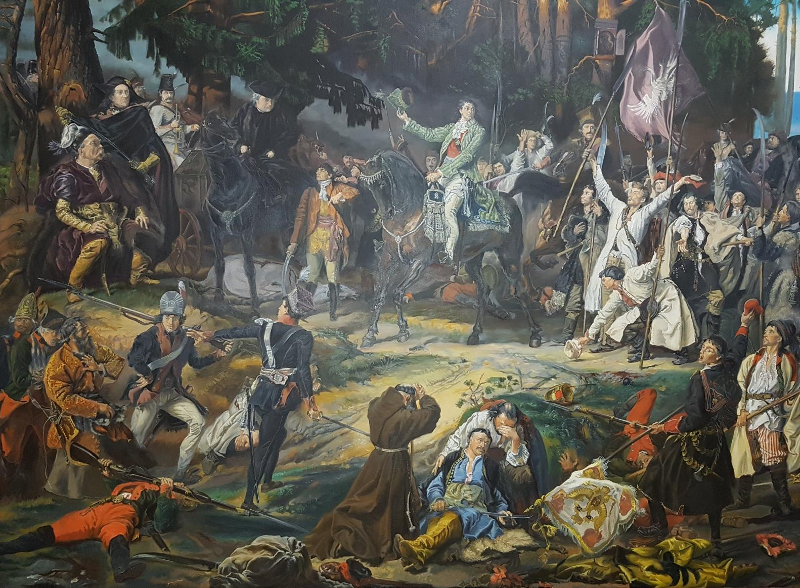

Galeria
Wybrane obrazy
Maluję pejzaże, portrety i obrazy sakralne, a także kopie dzieł znanych malarzy. Tutaj pokazuję kilka z tych prac.


Wyróżniona praca
Kościuszko pod Racławicami — moja kopia
Prezentuję moją kopię obrazu Jana Matejki „Kościuszko pod Racławicami”, namalowaną na dwumetrowym płótnie.
Postacie i szczegóły
Scena batalistyczna składa się z wielu postaci i szczegółów. W galerii możesz przyjrzeć się pracy z bliska.
Zapytaj o obrazMoje malarstwo
Przestrzeń, barwa i detal
Przestrzenność
Zależy mi na przestrzenności obrazu.
Żywa barwa
Żywa barwa jest jedną z cech mojego malarstwa.
Szczegóły
W malowaniu ważny jest dla mnie detal.
Własna droga
Jestem samoukiem. Swój talent i zamiłowanie rozwijam, malując.
O artyście
Moja droga do malarstwa
Nazywam się Grzegorz Kozdrój. Maluję od 20 lat, początkowo hobbystycznie i z dużymi przerwami. Od kilku lat zajmuję się malarstwem profesjonalnie.
Opowiadam o tym, co i dlaczego maluję.
Poznaj moją historięJestem samoukiem. Nie chcę zmarnować talentu i zamiłowania do malarstwa.
W sprawie obrazu
Porozmawiajmy o obrazie
Kontakt
Napisz, który obraz Cię zainteresował lub jaki temat chciałbyś poruszyć.
Dostępność pracy
Jeśli wybierasz pracę z galerii, zapytaj mnie, czy jest dostępna.
Szczegóły
O ewentualnym zamówieniu lub przekazaniu obrazu porozmawiamy indywidualnie.
Kontakt
Napisz do mnie w sprawie obrazu
Jeśli zainteresował Cię któryś z obrazów, zapytaj mnie o jego dostępność. Możesz też napisać w sprawie indywidualnego zamówienia lub współpracy.